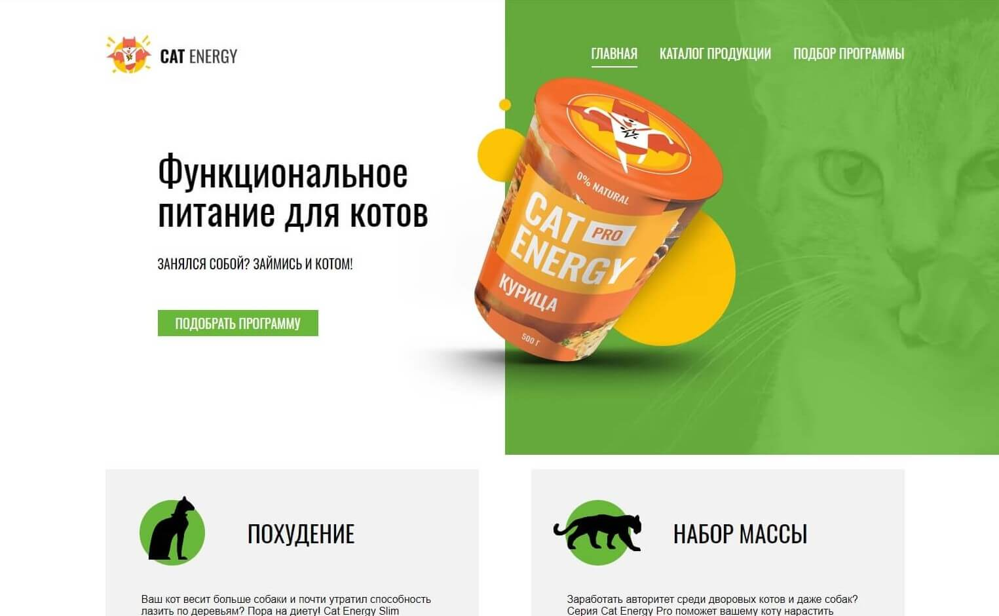

Обо мне
Путь в веб я начал поздно, в 30 лет. Первым местом, где получал знания, была HTML Academy. Прошел начальные курсы по Html, Css и немного JS. В дальнейшем понял, что их методика обучения не совсем мне подходит и продолжил обучаться самостоятельно. Купил книгу (новая большая книга по CSS) и при помощи интернета и книги начал писать небольшие лендинги. В дальнейшем захотел их немного оживить и в связи с этим погрузился в JS. Первое время читал документацию на learn.javascript, mdn, потом посоветовали курсы на Hexlet. На них и остановился. Сейчас к JS подключил React, чтобы лучше понимать основы языка, так как он там неплохо зайдействован, да и сам фреймворк понравился. В ближаийших планах выучить PHP и React Native.
Стек технологий и инструменты
Чем пользуюсь в работе
- Инстурменты:
- Visual Studio Code
- WebStorm
- Photoshop
- Adobe XD
- Технологии:
- Html5
- CSS3: "Flex, Grid"
- Sass
- JavaScript
- JQuery
- React
- Gulp
- Git
Портфолио
Портфолио
-

Небольшой трехстраничный сайт магазина с едой для кошек. Адаптивен под мобильные телефоны и планшеты. В каталоге реализованна подгрузка еды по кнопке "Показать ещё".